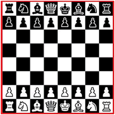
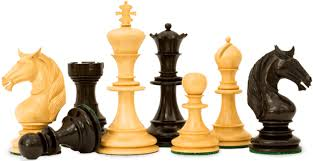
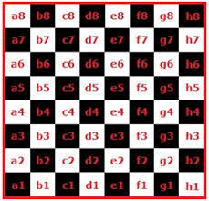

 Xadrez é um esporte de tabuleiro, para dois jogadores.
O jogo de Xadrez é disputada no tabuleiro de casas clara e escura; no inicio, cada enxadrista controla dezesseis peças com diferentes formatos e carcterísticas especificas.
 Como já sabemos cada enxadrista fica com 16peças: oito peões, dois cavalos, dois bispos, duas torres, um rei e uma rainha.
 Durante o jogo de xadrez, cada enxadrista controla suas peças, que podem ser cor clara ou escura(branca ou preta), sendo que as claras sempre inicia o jogo. O tabuleiro tem oito fileiras e oito colunas (sendo medade claras e metade escura) intercaladas.
Agora que ja sabemos como montar o jodo do Xadrez. Precisamos aprender como mover as peças.
Observe com atenção no movimento do Peão. lembrando que cada enxadrista tem 8 peões.
Atenção que já estamos aprendendo os movimentos das peças. Agora vamos aprender o movimento da torre.
Com este video vamos aprender a mover o Cavalo. A unica peça do jogo que pode pular as outras peças.
Agora vamos aprender a movimentar o Bispo. Atenção que ele se move na diagonal e na cor especifica do quadrado tabuleiro.
A Rainha é uma das peças de maior pontuação do Jogo, é imprencidivel mante-la no jogo. Então precisa atentar para o movimento da peça.
Apesar de ter pouca pontuação o Rei é a peça principal do jogo, pois se perde-lá, o jogo termina e você perde a partida.
Então precisamos aprender a move-ló e defende-ló.